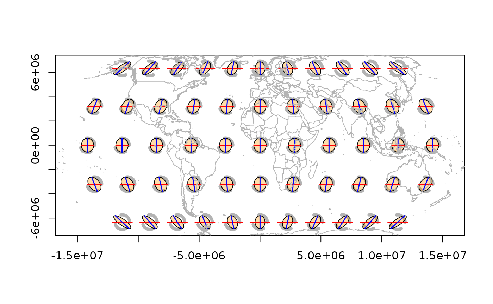
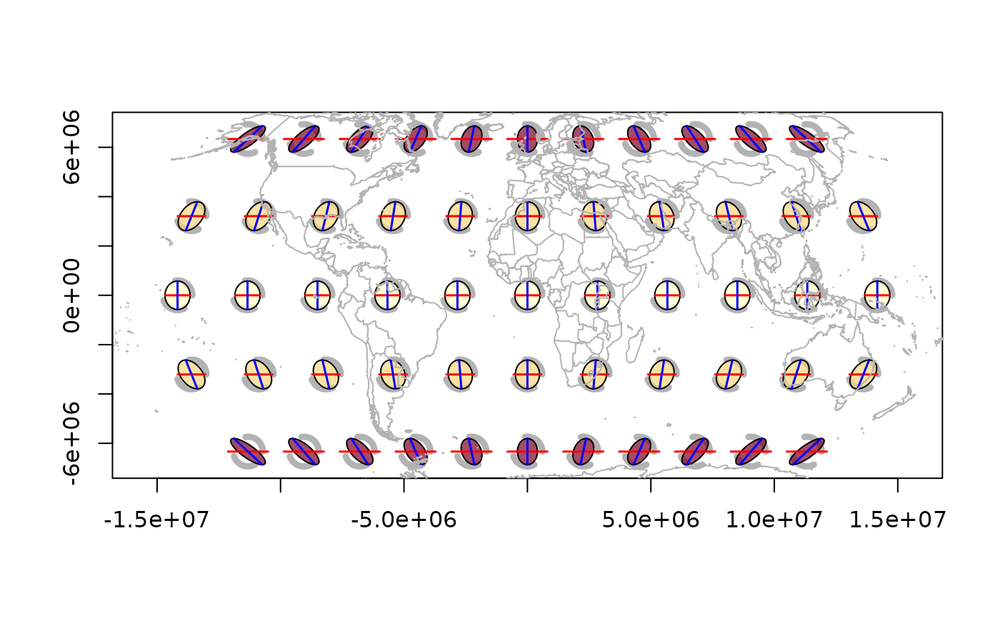

Draws all indicatrixes in an indicatrix_list, optionally creating a
new plot or adding to an existing one. Can colour-code the fill by a
distortion metric.
Usage
# S3 method for class 'indicatrix_list'
plot(
x,
scale = 1e+05,
n = 72,
col = "#FF990055",
border = "black",
add = FALSE,
show.axes = TRUE,
show.circle = TRUE,
fill.by = NULL,
palette = NULL,
ncolors = 64L,
...
)Arguments
- x
an
indicatrix_list(fromindicatrix())- scale
scaling factor for ellipse size in projected units
- n
number of points per ellipse
- col
fill colour. If a single colour, used for all ellipses. If
NULLandfill.byis set, colours are generated automatically.- border
border colour
- add
logical; add to existing plot? If
FALSE, creates a new plot sized to contain all ellipses.- show.axes
TRUE,FALSE, or a named list of graphical parameters. Seeplot.indicatrix()for defaults.- show.circle
TRUE,FALSE, or a named list of graphical parameters. DefaultTRUEfor the list method (the circle-vs-ellipse comparison makes distortion visible at map scale). Seeplot.indicatrix()for defaults.- fill.by
character; name of a distortion metric to colour-code the fill. One of
"scale_area","angle_deformation","scale_h","scale_k","scale_a","scale_b". DefaultNULL(uniform fill).- palette
colour palette function (default
grDevices::hcl.colors())- ncolors
number of colours in the palette (default 64)
- ...
passed to
plot.indicatrix()
Examples
xy <- expand.grid(seq(-150, 150, by = 30), seq(-60, 60, by = 30))
r <- tissot(xy, "+proj=robin")
ii <- indicatrix(r)
## Uniform fill
plot(ii, scale = 6e5, add = FALSE)
tissot_map()

## Colour by areal distortion
plot(ii, scale = 6e5, add = FALSE, fill.by = "scale_area")
tissot_map()
